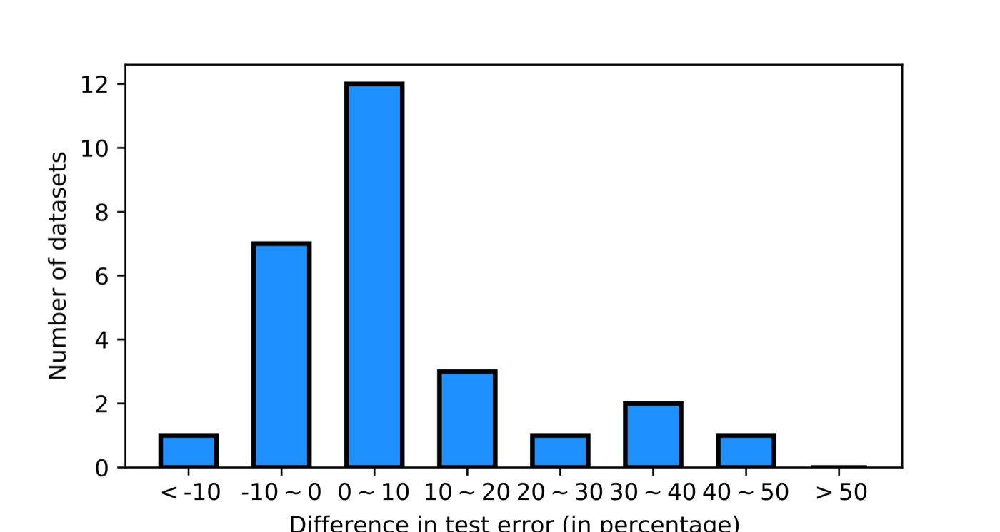
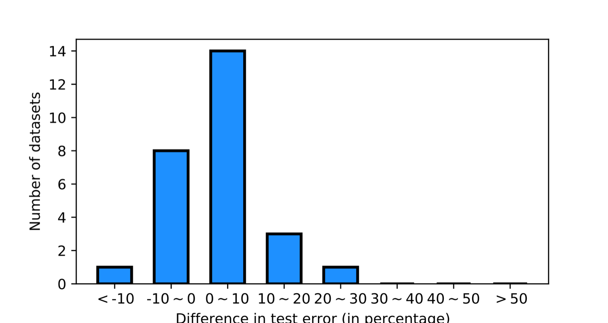
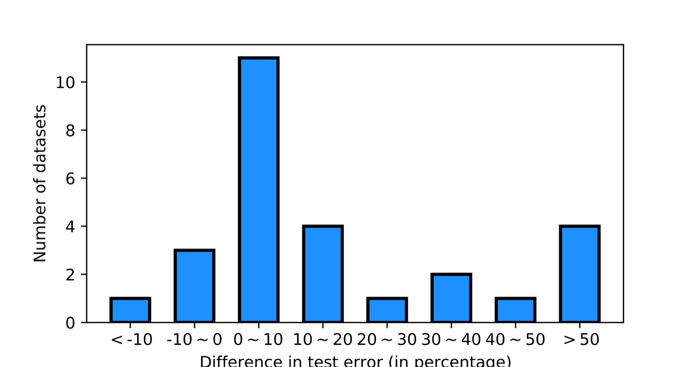
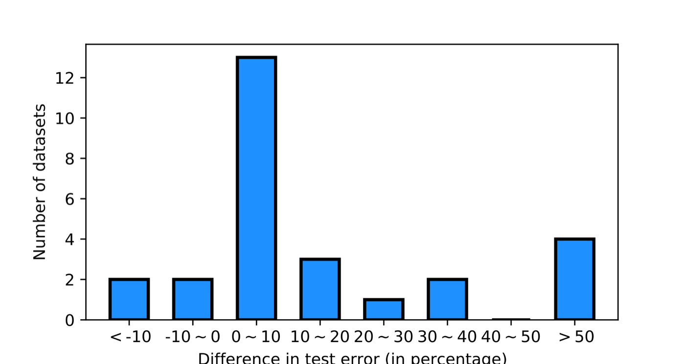

- 深さ 2 を数秒で16 個の分類データすべてで、深さ 2 の最適な木を 5 秒未満で求めた。BinOCT、MurTree、DL8.5 より数桁速い。
- 深さ 3 でも 13 データで最速深さ 3 では 16 データのうち 13 データで比べた手法の中で最も速かった。時間の上限は 4 時間、メモリの上限は 25 GB。
- 反復は高々 \(\lceil \log_s n \rceil\) 回深さ 2 のアルゴリズムは高々 \(\lceil \log_s n \rceil\) 回の反復で終わり、最適解を返す（定理 1）。\(s\) は区間を区切る数。
連続の特徴量では候補のしきい値がデータ点の数だけあり、二値化すると特徴量が膨れ上がる
訓練誤差が最小の最適決定木を求める問題は NP 困難で、CART や ID3 などの貪欲法が広く使われてきた。MIP による定式化は大きな問題に広げにくく、DL8.5、MurTree、GOSDT などの専用アルゴリズムは二値の特徴量を前提にしている。論文によれば、二値の特徴量だけなら深さ \(d\) の回帰木の全探索は \(O(np^d)\) だが、連続の特徴量では \(O(n^d p^d)\) になる（\(n\) はデータ点の数、\(p\) は特徴量の数）。
連続の特徴量 \(f\) を、異なる値の数 \(u(f)\) に応じて \(u(f) - 1\) 個の二値の特徴量に置き換えれば、最適な木は変わらない（同値変換）。ただし二値の特徴量は最悪で \(O(np)\) 個になる。論文の付録では、bean（特徴量 16 個）が同値変換で 170,481 個になり、MDLP による近似的な二値化なら 428 個で済むが、訓練精度が下がる場合がある。論文は、分類と回帰の両方に使え、連続の特徴量を直接扱い、商用の最適化ソルバーに頼らない最適な木の手法は Quant-BnB が初めてだとしている。
深さ 2 の木の集合を、根の特徴量としきい値の範囲と子の特徴量の組で表す
しきい値は隣り合う異なる値の中点 \(\tilde w^f_t\) だけを考えればよい。深さ 2 の木の部分集合 \(\mathcal{T}_2(f_0, [a, b], f_1, f_2)\) は、根の特徴量が \(f_0\) でしきい値の添字が \([a, b]\) にあり、左右の子の特徴量が \(f_1, f_2\) の木の集まりである。データの部分集合 \(\mathcal{I}\) に対する定数の当てはめ、深さ 1、深さ 2 の最小の損失を次のように書く。
損失 \(\ell\) は回帰なら二乗誤差（多次元の目的変数も可）、分類なら誤分類である。\(L_1\) は並べ替えを含めて \(\tilde O(|\mathcal{I}|)\) で計算できるが、\(L_2\) は根のしきい値をすべて試すので重い。そこで \(L_2\) の上界と下界を少ない計算で求める。
上界は分位点のしきい値だけで、下界は真ん中のデータを捨てて計算する
上界：区間 \([a, b]\) をほぼ等間隔に \(s\) 個に区切った点 \(t_0 = a, t_1, \dots, t_s = b\) だけで根のしきい値を試した最小値 \(V_s\) は、\(L_2\) の上界になる。分位点を使う発想は XGBoost などの貪欲法にもあるが、ここでは最適な木を求めるために使う。
下界：しきい値が \([a, b]\) のどこにあっても、値が \(\tilde w_a\) 以下のデータは必ず左に、\(\tilde w_b\) 以上のデータは必ず右に行く。そこで真ん中のデータ \(\mathcal{I}^{f_0}_{[a,b]}\) を捨てて計算した損失 \(W_0\) は下界になる。
\(W_2\) は捨てた真ん中のデータに別の深さ 2 の木を当てはめた損失を \(W_0\) に足したもの、\(W_{1,s'}\) はその代わりに真ん中を \(s'\) 個に区切り、区切りごとにその部分だけ捨てて計算した下界 \(\widehat L_2\) を足したものである。補題 2 がこの大小関係を示す。下界は強いほど多く捨てられるが、計算も重くなる（補題 3）。\(s' \approx ns/(b-a)\) とすると \(W_{1,s'}\) の計算量は \(W_0\) と同じ \(\tilde O(n \tilde p s)\) で、下界は常に \(W_0\) 以上になる。
生きている区間を分位点で \(s\) 個に区切り、下界が現在の最良値を超えた区間や特徴量を捨てる
Quant-BnB は「生きている」探索範囲の組 \((f_0, [a, b], F_1, F_2)\) の集合 \(\mathtt{AL}\) を持つ。最初はすべての根の特徴量について、しきい値の範囲全体と子の特徴量の全体 \([p]\) を入れておく。各反復で、組ごとに次の 2 段階を行う。
- 上界の更新：区間を \(s\) 個に区切った点で \(V_s\) を計算し、現在の最良値 \(U\) より小さければ更新する。
- 下界による枝刈り：区切った小区間 \([t_{j-1}, t_j]\) ごとに、子の特徴量の組の下界 \(W\) を計算し、\(U\) を超えない組がある特徴量だけを残す（命題 1）。残った特徴量が空になった小区間は丸ごと捨て、残りの小区間を次の反復に回す。
区間の幅が \(s\) 以下になったら全探索する。区間は反復ごとに約 \(1/s\) に縮むので、アルゴリズムは高々 \(\lceil \log_s n \rceil\) 回の反復で終わり、最適解を返す（定理 1）。実験では \(s = 3\)、\(s' = \lfloor 0.6 ns/(b-a) \rfloor\) とした。下界に \(W_2\) や \(L_2\) を使うと計算量が \(n\) について線形でなくなる。
深さ 3 では、根の範囲と左右の深さ 2 の部分木の候補の集合の組 \((f_0, [a, b], \Phi_1, \Phi_2)\) を同じように絞る（詳細は付録）。深さ 4 以上にも同じ再帰を使えるが、特に特徴量が多いと計算量が増えるので、論文は深さ 3 以下で使うことを勧めている。葉の位置が揃わない木（各ノードを分岐にも葉にもできる木）も、追加の計算量なしに扱えるように変更できると述べている。
下界は強さより計算の軽さが効き、\(W_{1,s'}\) が多くのデータで最も速かった
実験は UCI の分類 16 データと回帰 11 データで、Intel Xeon 2.30 GHz の 1 コア、メモリ 25 GB で行った。データ点が \(10^4\) 以上のデータで深さ 2 の木を求めた時間を下界ごとに比べた（論文の表 2、上限 10 分）。avila では \(W_0\) が 5.1 秒、\(W_{1,s'}\) が 4.5 秒、\(L_2\) を直接使うと 519 秒で、\(W_2\) は 10 分で終わらなかった。\(W_2\) が 10 分以内に終わったのは htru（244 秒）だけで、強い下界でも計算が重すぎた。以降の実験では \(W_{1,s'}\) を使っている。
深さ 2 では既存の最適な手法より数桁速く、深さ 3 でも 16 データ中 13 データで最も速かった
比べたのは MIP の BinOCT、二値化した特徴量を使う MurTree と DL8.5 である（論文の表 3）。MurTree と DL8.5 にはすべてのしきい値で二値化した同値変換のデータを与えた。時間の上限は 4 時間、メモリの上限は 25 GB である。
- 深さ 2：Quant-BnB はすべてのデータで最も速く、最大でも avila の 4.5 秒だった。たとえば segment では Quant-BnB が 1.1 秒、MurTree が 389 秒、DL8.5 が 213 秒で、BinOCT は 4 時間で終わらなかった。MurTree は 4 データ、DL8.5 は 3 データでメモリ不足になった。
- 深さ 3：13 データで Quant-BnB が最も速かった。eeg と skin では MurTree のほうが速く（1,783 秒と 4,042 秒、112 秒と 350 秒）、fault ではどの手法も 4 時間で終わらなかった。htru では Quant-BnB が 10,303 秒かかり、ほかの手法はメモリ不足だった。
- OCT、FlowOCT、BendersOCT、GOSDT も試したが、16 データのどれでも最適な木を求められなかった。
- 回帰（付録）：MIP の ORT はすべてのデータで時間切れになった。Quant-BnB は数千件規模のデータの深さ 2 を 10 秒未満で解き（特徴量 59 個の news は 349 秒）、深さ 3 も 11 データ中 9 データで 4 時間以内に解いた（energy と news は時間切れ）。
論文は、MurTree と DL8.5 が二値の特徴量だけのデータでは非常に効率的でも、連続の特徴量では二値化で特徴量が増えるために重くなるのだろうと述べている。近似的な二値化を使えば特徴量は減るが、訓練データの情報を失うことがある。
深さ 2 では 66% を超えるデータで CART や TAO よりテスト誤差が小さく、深さ 3 では多くのデータで上回った
分類 16 と回帰 11 の計 27 データで、同じ深さの軸に平行な木を作る CART と TAO（交互最適化による発見的な手法）とテスト誤差を比べた。データごとに、相手のテスト誤差 \(L_C\) と Quant-BnB のテスト誤差 \(L_Q\) の相対差 \((L_C - L_Q)/L_Q\) を求め、その分布を示している（正なら Quant-BnB が良い）。深さ 2 では 66% を超えるデータで Quant-BnB のテスト誤差が小さく、深さ 3 では大半のデータで CART と TAO を上回った。TAO は CART よりわずかに良いが、計算が重い。論文は、特に深い木で最適な木が発見的な手法より有利だと結んでいる。




図2 27 データでの相対的なテスト誤差の差 \((L_C - L_Q)/L_Q\)（%）の分布。横軸が正なら Quant-BnB のテスト誤差が小さい（論文 Fig. 2、arXiv 版）。
連続の特徴量の最適決定木を浅い深さで実用にしたが、深さ 4 以上は勧められていない
- 論文は、深さ 3 を大きく超える木は解釈しにくいので浅い最適な木にも意味があり、貪欲法は同じ誤差に届くのにより深い木が要りうると述べる。予測性能を上げたければ浅い木のアンサンブルを使う手もあるとしている。
- 深さ 3 でも数時間かかるデータがある（htru で 10,303 秒）。深さ 4 以上は特徴量が多いと計算量が増えるので勧めていない。
- のちの ConTree（2025）は、連続の特徴量を直接扱う動的計画法で、深さ 3 の木を Quant-BnB より幾何平均で 63 倍速く求め、深さ 4 の最適な木も多くのデータで求めたと報告している。
@inproceedings{mazumder2022quantbnb,
title = {Quant-{BnB}: A Scalable Branch-and-Bound Method for Optimal Decision Trees with Continuous Features},
author = {Mazumder, Rahul and Meng, Xiang and Wang, Haoyue},
booktitle = {Proceedings of the 39th International Conference on Machine Learning},
series = {Proceedings of Machine Learning Research},
volume = {162},
pages = {15255--15277},
publisher = {PMLR},
year = {2022}
}
ページの数値と図は arXiv 2206.11844（付録を含む版）による。PMLR 版の本文とは照らし合わせていない。表と補題の番号は arXiv 版の順に数えた。